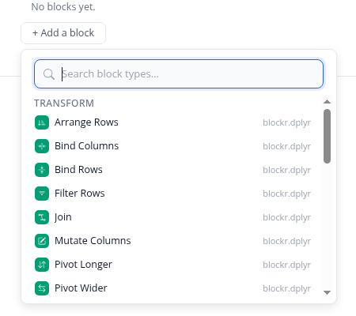
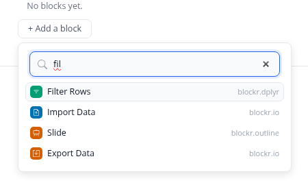
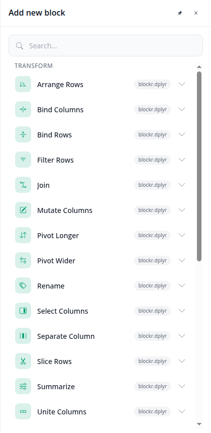
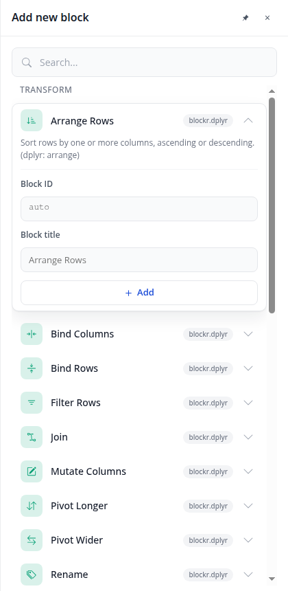
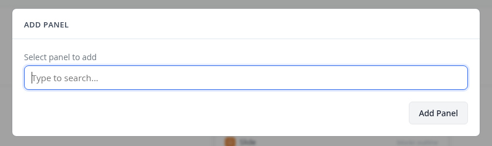

You asked how blockr.outline and blockr.dock let you pick a block, to add one or to get an overview. There are
three pickers today, each its own design. The screenshots are from a running board (blockr.outline main 84515de,
blockr.dock feat/simplified-mode). One more finding: blockr.outline draws everything from its own nine colour
variables (--md-primary, --md-g400 … in inst/assets/css/outline.css), hard-coded hex,
so it follows neither a theme nor the dark scheme.

Outline, "+ Add a block". A menu under the button: search, category titles, 30px rows, an 18px solid category square, the package as muted text. Browses by category at rest…

…and turns into a flat, ranked list once you type.

Dock, "Add new block". A right sidebar: 42px search, category titles, 50px cards with a 32px tinted square, the package as a grey badge, and a chevron per card.

The chevron opens the card: the description, "Block ID" (auto), "Block title", and a full-width Add button.

Dock, "Add panel" (the + in a tab strip): a Bootstrap modal with a selectize search and a grey button, to put a block or an extension already on the board into this view.
A. A menu at the "+", everywhere
The outline's picker on the decided menu surface, wherever a "+" is: the outline, a block's "append", the board's Add block. Configure before adding goes.
B. The sidebar, everywhere
Dock's card list for every add, including the outline's "+"; each card can be opened to set the ID and title first.
C. By place
A menu where the "+" sits next to something (outline, append); the sidebar for the board-wide Add block, where there is room to browse.
For an overview of what blocks exist, the one-line description matters; once you type a name it is in the way. Today the dock hides it behind the chevron and the outline does not show it.
A. Never
Name and package only; the description lives nowhere in the picker.
B. A second line while browsing
At rest every row carries its description in muted; once you type, rows go back to one line.
C. On the highlighted row only
One line per row; the row under the pointer or the arrow keys shows its description.
A. Solid 18px, package as text
The outline today: a solid category square with a white glyph.
B. Tinted 32px, package as a badge
The dock today, and the block header's own icon, shrunk less.
C. Tinted 20px, package as text
The block header's tinted square at menu size; the package as the menu's meta text.
"Add panel" (the + in a tab strip), "link to", "add to stack" and the outline's search all pick among the board's own blocks. "Add panel" is a Bootstrap modal with selectize, the one place outside the system.
A. A modal with a search box (Add panel today)
Opens over the board, then a second list inside the search box, then a button.
B. The same menu, listing the board's blocks
Opens at the "+"; rows are the board's blocks with their mark, title and type; a pick adds it.
outline_registry()).--md-* variables to the blockr tokens; that is what makes it follow a theme and dark mode.